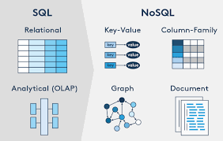

Tipos de Bases de Datos NoSQL

- Clave-valor: Almacenan datos como pares clave-valor, como Redis o DynamoDB.
- Documentales: Organizan datos en documentos como JSON, por ejemplo, MongoDB.
- Columnar: Diseñadas para grandes cantidades de datos en columnas, como Apache Cassandra.
- Grafos: Utilizan nodos y aristas para representar relaciones, como Neo4j.